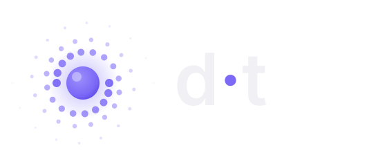
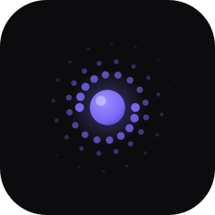
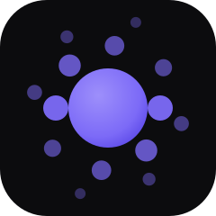

The memory spiral · v1
The idea. A galaxy of memory fragments, every file, commit,
and decision, spiraling inward and condensing into a single luminous dot.
Knowledge scattered across a codebase becomes one point of recall. The two
spiral arms echo a neuron's dendrites and a galaxy at once; the trail fades
the way memory decays, and the core glows the way the daemon never sleeps.
It animates naturally (the spiral turns, the core breathes), reduces to a
plain dot at 16 pixels, and is drawn entirely from the product's own accent
violet #7c6af7 on near-black #0c0c0e.

logo-mark.svg · dark surfaces
logo-lockup.svg · mark + d·t wordmark
app-icon.svg · avatars, stores, social
favicon.svg · simplified for 16–32 pxKeep clear space of at least half the core's diameter around the mark. Never recolor the spiral outside the palette; on light backgrounds prefer the mono mark in near-black. Don't add strokes, shadows, or rotate the static mark. The animated mark is for the website hero and loading states only, never inside dense UI. The wordmark is lowercase d·t or dot, Inter SemiBold, tight tracking, with the middle dot always in accent violet.